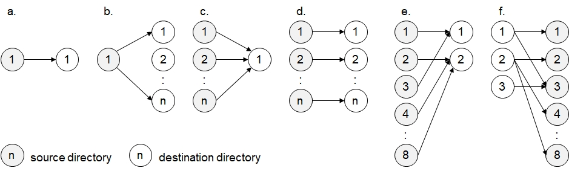

Function Names
file copy multiple, file copy multiple all, file copy multiple overwrite, file copy multiple overwrite all, file copy recursive, file copy recursive all, file copy recursive overwrite, file copy recursive overwrite allDescription
These functions copy files as well as directories including their files.
file copy ... overwrite ...: Existing files in destination directory are automatically overwritten. Otherwise, existing files will not be overwritten.
file copy recursive ... will also copy subdirectories and their files.
file copy ... all: The copying process will not stop when encountering or locked or protected files in destination directories as well as existing files in destination directories if 'overwrite' is specified in the function name.
Instead, these files will be skipped.
The three function parameters may be literals or parameter sets. If the 1st or 2nd parameter is empty, nothing will be copied.
If (illustration, case a.) the 1st and 2nd parameter contain one entry each, then contents from one specified directory are copied to one specified target directory.
If one of the two parameters contain more elements (case b and c), then the copy procedure will be repeated as illustrated.
Case d (multiple but identical number of entries) copies contents from the source directory to the corresponding destination directory. Finally, case e depicts multiple but different number of entries. The number of copy cycles corresponds to the higher number of entries. In the parameter with fewer entries, the 1st element will be referenced again after the last one was referenced (similar to modulo functionality).

Call as: procedure or function
Restrictions
Indirect parameter passing is disabled.
Parameter count
2-3
Parameters
| No. | Type | Description |
|---|---|---|
| 1 input |
parameter set or literal | name of existing path(s) Every parameter must refer to an existing directory. |
| 2 input |
parameter set or literal | name of target path(s) If the destination path is not existing, then it will be created. |
| Opt. input |
parameter set or literal | Names of file or pattern to copy Wildcard symbols are allowed here. Providing a blank literal will copy nothing because there are no files with blank file names. Default value: '*' (all files) |
Return value
| Type | Description |
|---|---|
| numeral | Number of files copied Counts the number of files copied. Subdirectories created will also be counted. |
Exceptions
Source directory not found
File not found
Target file already existing
attempting to create sub-directories which exist as files
subdirectories cannot be created
Examples
file copy overwrite( {}, "D:\abc" ); // Nothing copied.
file copy overwrite ( "D:\abc", {} ); // Nothing copied.
file copy recursive( "D:\abc", "D:\def\" ); // Copy everything from abc to def including sudirectories (case a)
file copy multiple overwrite( "D:\abc", "D:\def\",“*.txt,*jpg", );
// Copies text files and photos from abc to def, and overwrites
// existing files. Subdirectories are ignored. (case a)
file copy recursive( "D:\abc", {"D:\def","D:\ghi"} ); // Copy files incl. subdirectories from abc to def as well as ghi (case b).
file copy recursive all ( { "D:\abc", "D:\def" }, "D:\ghi\" );
// Copies all files from directories abc as well as def into ghi. (case c). Don't stop if destination files exist or are locked.
file copy multiple({"D:\abc","D:\def"},{"D:\ghi","D:\jkl"}); // (case d)
file copy multiple('D:\abc,D:\def','D:\ghi","D:\jkl"'); // Same functionality (case d)
// Copies all files from abc to ghi as well as from def to jkl.
file copy multiple('D:\a,D:\b,D:\c,D:\d,D:\e', 'D:\m,D:\n' );
// Copies contents from a, c and e to m, and contents from b and d to n. (case e)
file copy recursive('D:\a,D:\b,D:\c', 'D:\m,D:\n,D:\o,D:\p,D:\q' );
// Copies contents incl. subidrectories from a to m and p, from b to n and q, and from c to o. (case f)